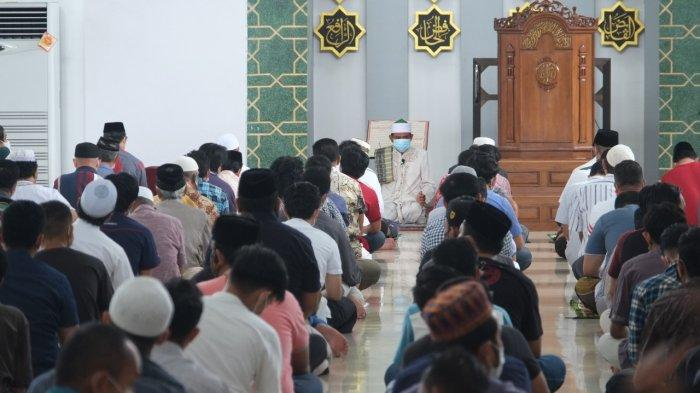

Mesjid Al Ikhlas adalah pusat kegiatan ibadah dan sosial yang berlokasi di tengah komunitas kami. Kami berkomitmen menjadi tempat yang nyaman dan damai untuk beribadah serta memperkuat ikatan persaudaraan. Kami menyelenggarakan berbagai kegiatan keagamaan dan sosial untuk semua umur.
Waktu Sholat Harian
- Subuh 04:33
- Dzuhur 11:49
- Ashar 15:11
- Maghrib 17:42
- Isya 18:57
Acara Terdekat
-

Pengajian Rutin Jumat
Setiap Jumat pukul 19:30 - Kajian Islam dengan Ustadz Ahmad.
-

Buka Puasa Bersama
Acara buka puasa bersama keluarga dan komunitas, 15 April 2025 pukul 17:30.
-

Program Sosial
Penggalangan donasi untuk korban bencana alam, mulai 1 hingga 30 Mei 2025.
Kontak Kami
Alamat: Jl Perumahan Terangsari blok i2, RT.001 RW.007 Cibalongsari.Kec Kelari Karawang
Telepon: 0895-6052-98359
Email: info@mesjid-alikhlas.id